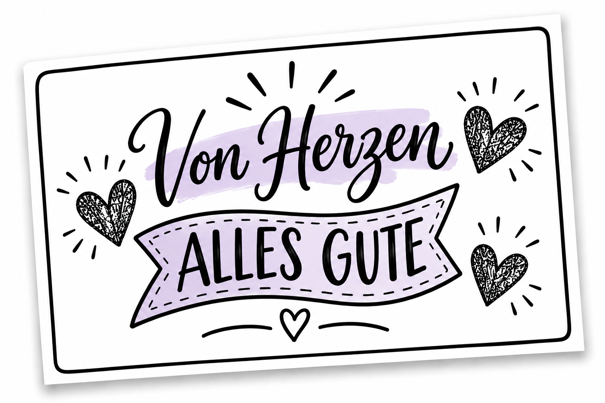
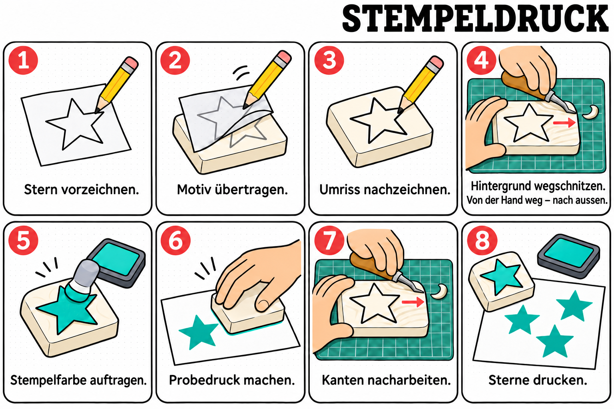
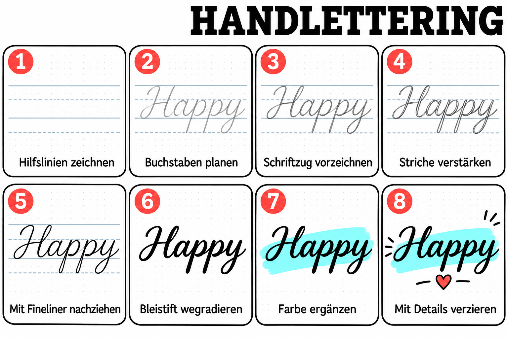
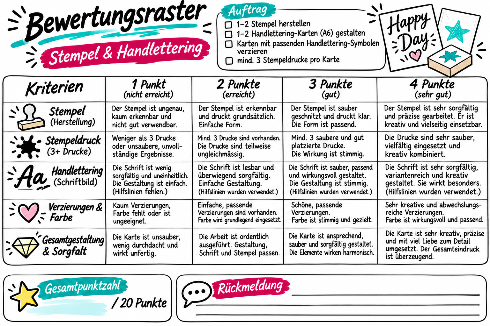

Kartenwerkstatt – Handlettering & Stempeldruck
Handlettering & Stempeldruck · Bildnerisches Gestalten · Stufenübergreifend
Gestalte persönliche Weihnachtsgrüsse. Kombiniere von Hand gezeichnete Schrift mit eigenen Stempelmotiven und gezielt eingesetzter Farbe.
Auftrag
- Stelle 1–2 eigene Stempel her.
- Gestalte 1–2 Handlettering-Karten im Format A6 (10,5 × 14,8 cm).
- Verziere jede Karte mit passenden Handlettering-Symbolen und mindestens drei Stempeldrucken.
- Verbinde Schrift, Motive und Farbe zu einer sorgfältigen Gesamtgestaltung.
Material
A6-Karten oder geeignetes Kartenpapier, Skizzenpapier, Bleistift, Radiergummi, Lineal, schwarzer Fineliner, Farbstifte oder geeignete Farbmarker, Stempelgummi beziehungsweise weiche Druckplatten, passende Schnitzwerkzeuge, Schneidunterlage und Stempelfarbe.
Beispiele
Nutze die Beispiele als Inspiration und entwickle deine eigene Gestaltung.

01 · Weihnachtsmotiv als Stempel
Wähle ein einfaches Motiv, etwa einen Stern, ein Geschenk, einen Tannenbaum oder ein Herz. Klare Formen lassen sich gut schnitzen und mehrfach drucken.
- Zeichne dein Motiv auf Papier vor.
- Übertrage es auf das Stempelmaterial. Beachte: Der Abdruck erscheint spiegelverkehrt, besonders bei Schrift.
- Zeichne den Umriss auf dem Stempelmaterial nach.
- Schnitze den Hintergrund vorsichtig weg. Die erhabenen Flächen drucken später.
- Trage Stempelfarbe gleichmässig auf.
- Mache einen Probedruck auf einem Restpapier.
- Arbeite störende Kanten nach und prüfe erneut.
- Drucke dein Motiv auf die Karte – mindestens dreimal pro Karte.
Sicher arbeiten: Lass dir das Werkzeug zeigen. Arbeite auf einer Schneidunterlage, schnitze immer von der Hand und vom Körper weg und halte die freie Hand hinter der Schneide.
Bildanleitung Stempeldruck ansehen

02 · Weihnachtsgruss in Handlettering
Schriftzüge digital ausprobieren
Gib deinen Kartengruss ein, vergleiche verschiedene Schriftstile und nutze deinen Entwurf als Vorlage zum Üben. Übertrage den Schriftzug anschliessend von Hand auf deine Karte und ergänze eigene Details.
Handlettering-Generator öffnen
Die Grundversion ist kostenlos. Zusätzliche Plus-Funktionen sind kostenpflichtig.
Wähle einen kurzen Gruss, zum Beispiel «Frohe Weihnachten», «Merry Christmas» oder «Von Herzen». Zeichne die Buchstaben bewusst, statt nur schnell zu schreiben.
- Zeichne feine Hilfslinien für Höhe und Grundlinie.
- Plane Buchstaben, Abstände und Platz auf der Karte.
- Zeichne deinen Schriftzug leicht mit Bleistift vor.
- Verstärke die Abstriche – die Linien, die beim Schreiben nach unten führen.
- Ziehe die Schrift mit Fineliner nach und fülle die verstärkten Striche.
- Lass die Tinte trocknen und radiere die Bleistiftlinien vorsichtig weg.
- Ergänze gezielt Farbe. Teste auf Restpapier, ob die Stifte die schwarze Schrift anlösen.
- Verziere mit passenden Symbolen, Linien, Bannern oder kleinen Herzen.
Bildanleitung Handlettering ansehen

Tipp: Übe deinen Schriftzug zuerst auf einem Probeblatt. Kombiniere eine schwungvolle Schrift mit einfachen Grossbuchstaben.
03 · Karte gestalten
- Skizziere zwei unterschiedliche Anordnungen von Schrift und Stempeln.
- Wähle eine stimmige Farbpalette und lass genügend freie Fläche.
- Teste Schrift, Farbe und Druck auf Restpapier. Gestalte danach deine A6-Karte.
- Ergänze mindestens drei Stempeldrucke und passende Verzierungen.
- Prüfe Sauberkeit, Lesbarkeit und Gesamtwirkung. Verfasse innen oder auf der Rückseite einen persönlichen Gruss.
Bewertung · 20 Punkte
Fünf Kriterien werden mit je 1–4 Punkten beurteilt: 1 = nicht erreicht, 2 = erreicht, 3 = gut, 4 = sehr gut.
| Kriterium | 1 Punkt | 2 Punkte | 3 Punkte | 4 Punkte |
|---|---|---|---|---|
| Stempel · Herstellung | Ungenau, kaum erkennbar und schlecht verwendbar. | Erkennbar, einfache Form; druckt grundsätzlich. | Sauber geschnitten, klare Drucke und passende Form. | Sehr sorgfältig, präzise, kreativ und vielseitig einsetzbar. |
| Stempeldruck | Weniger als drei Drucke pro Karte oder unsaubere, unvollständige Ergebnisse. | Mindestens drei Drucke pro Karte, teilweise ungleichmässig. | Mindestens drei saubere, gut platzierte Drucke pro Karte; stimmige Wirkung. | Sehr saubere Drucke, vielfältig eingesetzt und kreativ kombiniert. |
| Handlettering · Schriftbild | Wenig sorgfältig, uneinheitlich; Hilfslinien fehlen. | Lesbar und überwiegend sorgfältig; einfache Gestaltung mit Hilfslinien. | Sauber, passend und wirkungsvoll; stimmige Gestaltung mit Hilfslinien. | Sehr sorgfältig, variantenreich und kreativ; besondere Wirkung mit Hilfslinien. |
| Verzierungen & Farbe | Kaum Verzierungen; Farbe fehlt oder passt nicht. | Einfache passende Verzierungen; grundlegender Farbeinsatz. | Schöne passende Verzierungen; stimmiger, gezielter Farbeinsatz. | Sehr kreative, abwechslungsreiche Verzierungen; wirkungsvolle passende Farben. |
| Gesamtgestaltung & Sorgfalt | Unsauber, wenig durchdacht oder unfertig. | Ordentlich; Schrift, Stempel und Gestaltung passen zusammen. | Ansprechend, sauber und sorgfältig; harmonische Elemente. | Sehr kreativ, präzise und mit Liebe zum Detail; überzeugender Gesamteindruck. |
Original-Bewertungsraster ansehen

Abschluss-Check
- 1–2 selbst hergestellte Stempel und 1–2 fertige A6-Karten vorhanden?
- Mindestens drei Stempeldrucke auf jeder Karte?
- Schrift lesbar, passende Symbole und Farbe gezielt eingesetzt?
- Probedrucke und Schriftentwürfe zum Zeigen bereit?
Reflexion: Was ist dir besonders gelungen? Was hast du nach dem Probedruck verändert? Was würdest du bei einer weiteren Karte verbessern?